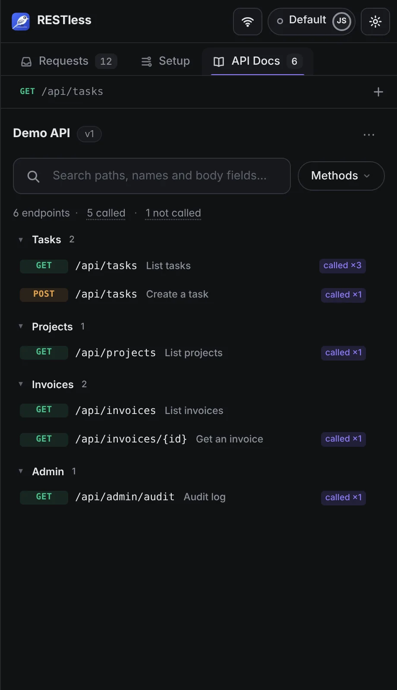
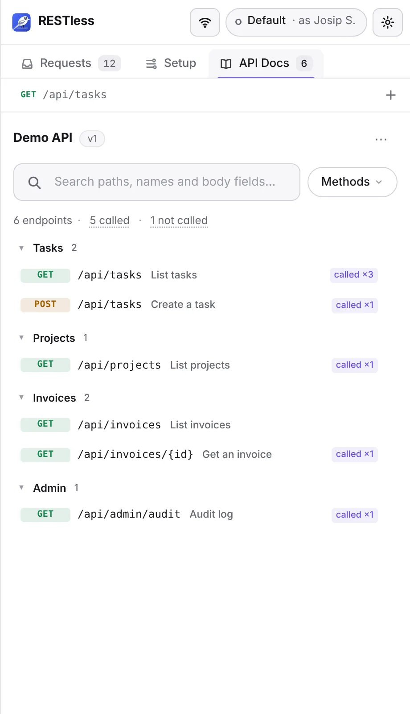
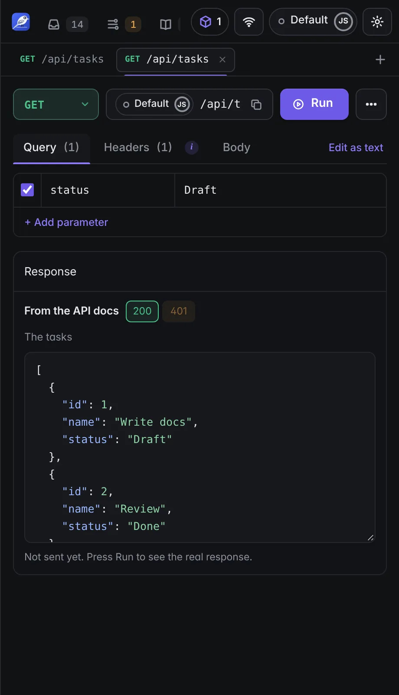
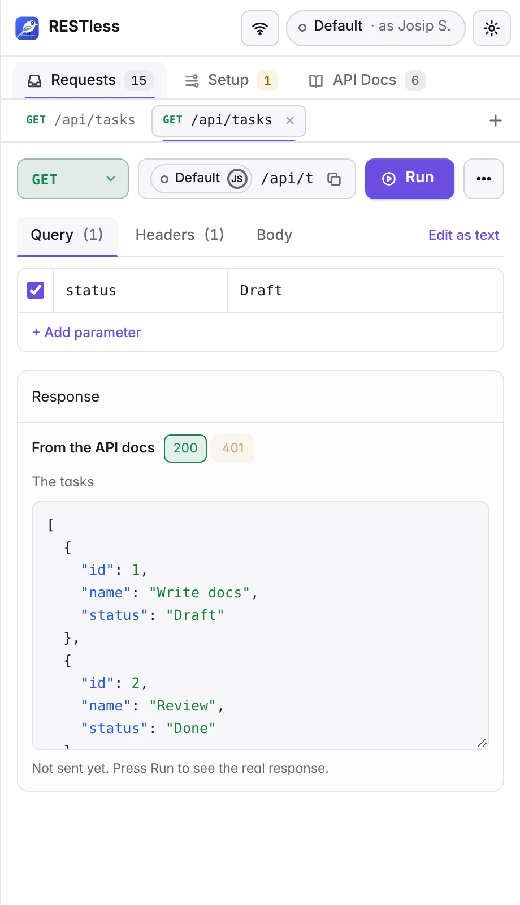

API docs
Load your OpenAPI / Swagger docs and try any endpoint.




Load your docs
Open API Docs and enter the URL of your swagger.json / openapi.json (a path like /v3/api-docs works too), or choose the file. RESTless remembers it for the site.
Try an endpoint
Click any endpoint to open it as a request. Before you run it, you see the response the docs describe. Press Run to get the real one.
Check against the docs
- After a run, the response is checked against the docs (Matches docs).
- Each endpoint shows whether the app has called it. Filter by called or not called to find what’s unused.
- When the docs at your URL change, a note says a new version is available. Press Refresh to load it.
- ⋯ → Reload shows What changed: new, removed and changed endpoints, with the changes that can break your app marked.